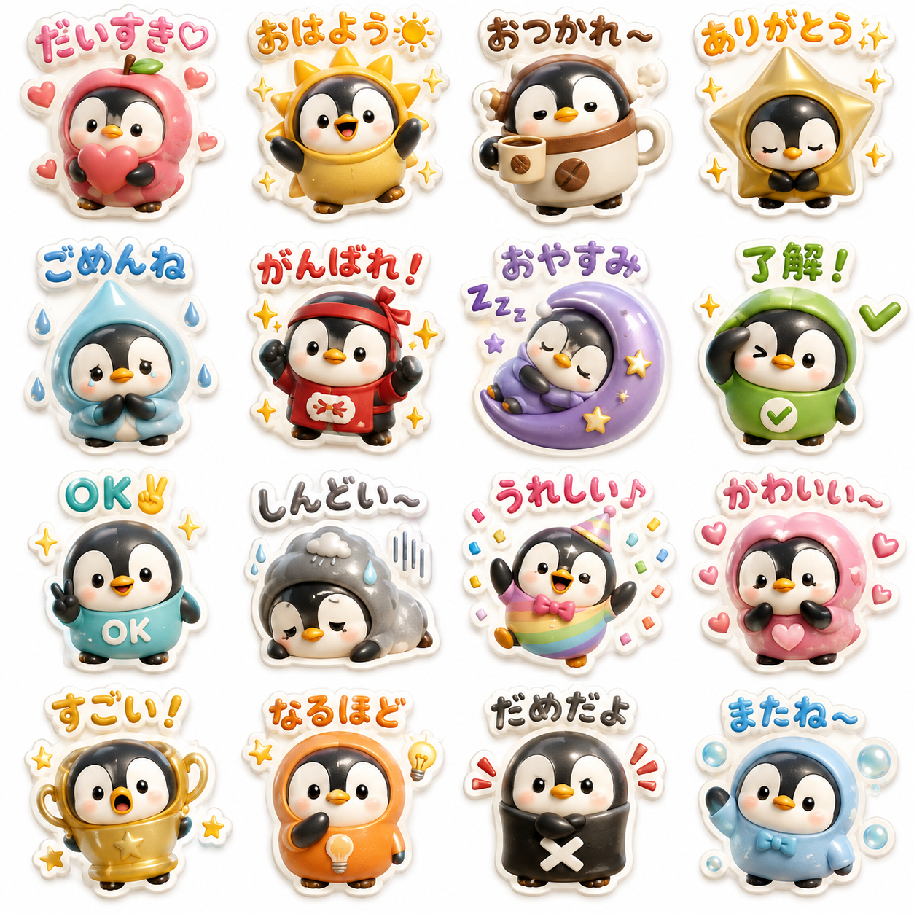
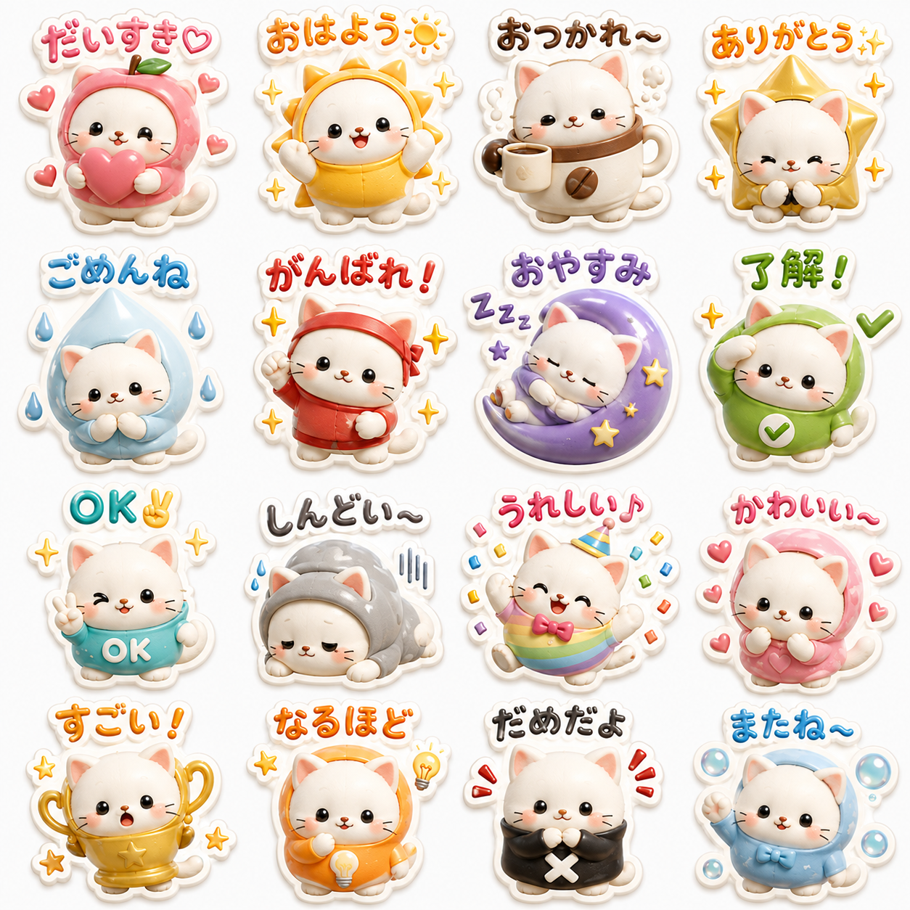
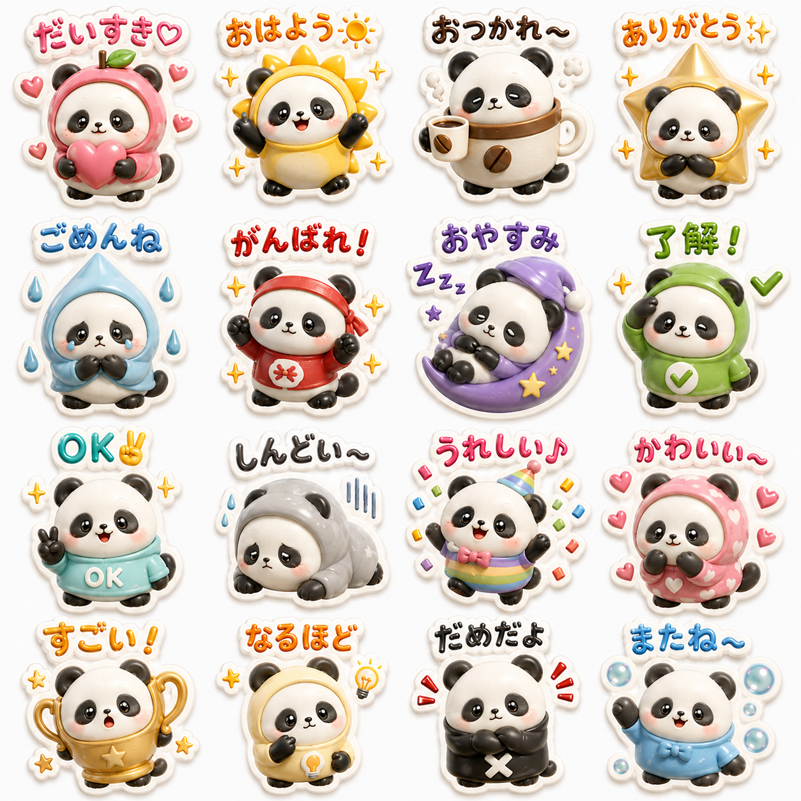
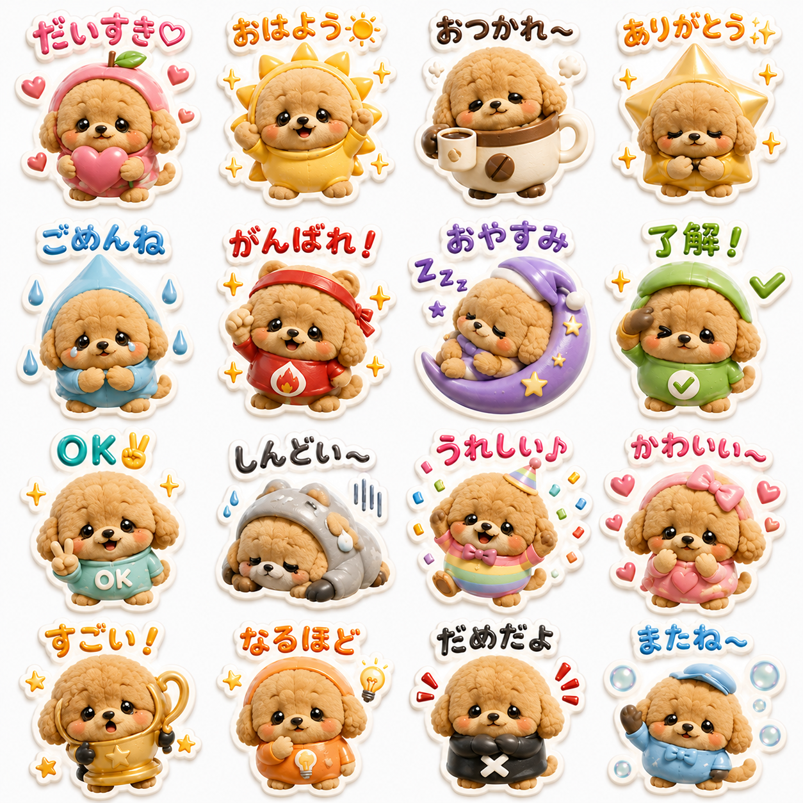
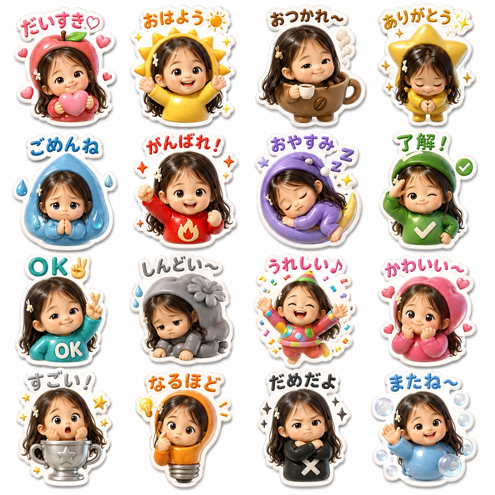

🌱 実は今、「ぷっくり3Dスタンプ」がじわじわ人気爆発中
ぷっくりシール系デザインはSNSでもトレンド真っ最中。
AIの進化で、スマホ1台＋無料で
「うちの子だけのオリジナルスタンプ」が作れる時代になりました🙌
自分用に使うだけの人も、そこから販売まで進む人も
どちらも今がまさに始めどきです✨
💡 なぜスキマ時間だけで完結するの？
📷 写真1枚とプロンプトだけ
うちの子の写真を送って、コピペプロンプトを貼るだけ。AIが自動でぷっくり3D画像を作ってくれます。
✂️ LINE公式アプリで直感操作
切り抜き・整形はすべてLINE Creators Studio内で完結。難しい編集ソフトは一切不要です。
🔁 一度作れば使い回せる
自分用に楽しむのはもちろん、そのまま販売設定に切り替えるだけでお仕事にもつながります。
📖 全体の流れ（3STEP）
ChatGPTでスタンプ画像を生成
うちの子の写真とコピペプロンプトをChatGPTに送るだけ。ぷっくり3D画像が一瞬で出来上がります。
LINE Creators Studioで切り抜き＆整形
生成した画像をアプリにアップロードし、1個ずつ切り抜くだけ。白フチも自動でついて仕上がります。
申請（自分用 or 販売用）
8個そろったら申請ボタンをタップ。自分だけで使うか、販売するかを選んで完了です。
📋 そのまま貼れるプロンプト（写真ありver）
お子さん・ペットの写真を添付して、下の文章をそのままChatGPTに貼るだけ✨
参考画像の被写体をモデルにして、16種類のLINEスタンプを4×4のグリッド形式で、1枚の画像として生成してください。 【最優先：ビジュアルの方向性】 イラスト調ではなく、ぷっくりとした3D CG・立体フィギュア風に仕上げてください。 ・ぬいぐるみ、プラッシュトイ、スクイーズトイのような丸みのある立体感 ・コレクタブルな3D vinyl figureのような、かわいらしいデフォルメ感 ・全体的にふっくら、もちっと膨らんだフォルム ・表面にはエポキシ樹脂をコーティングしたような、なめらかな艶と光沢 ・頬、体、手足、コスチュームまでしっかり立体的な丸みをつける ・BlenderやCinema 4Dで制作したような、高品質な3Dレンダリング表現 ・実物のミニチュアフィギュアを撮影したような質感 【被写体の再現について】 参考画像に写っている被写体の特徴をできるだけ維持してください。 ・顔立ち、毛色、髪色、目、耳、鼻などの特徴を反映 ・犬の場合は犬種特有の特徴を残す ・猫の場合は猫種や毛柄などの特徴を残す ・子どもの場合は髪型や顔立ちなど、本人らしさが残るようにする ・頭を大きめ、体を小さめにした2頭身程度のかわいいチビキャラにデフォルメ ・16種類すべて、同じキャラクターだと一目で分かるよう統一する ・基本デザインは変えず、表情・ポーズ・コスチュームのみ変化させる 【スタンプの形】 各スタンプは四角く切り抜かず、キャラクター・文字・装飾をまとめたダイカットステッカー風にしてください。 ・輪郭に沿って均一な白フチをつける ・白フチの太さは8〜10px程度 ・ステッカー全体にもぷっくりとした厚みを持たせる ・透明な樹脂を盛ったような立体的なコーティング ・自然なドロップシャドウを加え、背景から少し浮いて見えるようにする ・実際に販売されている立体ステッカーのような質感 【共通の質感・デザイン】 ・puffy 3D dimensional sticker ・エポキシ樹脂のような透明感のある艶 ・ぬいぐるみのような、やわらかくふわふわした質感 ・顔、毛色、髪色、目などのキャラクター設定は16種類すべて統一 ・瞳は丸くつぶらで、ガラス玉のような3D光沢を持たせる ・瞳の中には自然な光の反射とキラキラしたハイライトを入れる 【16種類のスタンプ】 1行目 1.「だいすき♡」愛おしそうな表情／ピンクのリンゴ風コスチューム／ハートを持つ／周囲に小さなハート 2.「おはよう☀」元気で明るい笑顔／黄色の太陽風コスチューム／目覚めたようなポーズ／光のキラキラ 3.「おつかれ〜」少し眠そうな優しい笑顔／ブラウンのコーヒーカップ風コスチューム／コーヒーを持つ／ふんわりした湯気 4.「ありがとう✨」感謝が伝わるキラキラした瞳／ゴールドの星風コスチューム／軽くお辞儀／周囲にキラキラ 2行目 5.「ごめんね」申し訳なさそうな瞳／水色の涙モチーフコスチューム／謝るポーズ／小さな涙のきらめき 6.「がんばれ！」やる気いっぱいの表情／赤系のパワフルなコスチューム／ガッツポーズ／エネルギッシュなキラキラ 7.「おやすみ」目を閉じた穏やかな表情／紫の三日月風コスチューム／眠るポーズ／「Zzz」の装飾 8.「了解！」自信のあるウィンク／グリーン系コスチューム／敬礼ポーズ／チェックマーク 3行目 9.「OK✌」リラックスした笑顔／ティール系コスチューム／元気なピースポーズ 10.「しんどい〜」ぐったりした垂れ目／グレーのしおれた花風コスチューム／しょんぼりポーズ／汗のしずく 11.「うれしい♪」喜びいっぱいの輝く瞳／カラフルなパーティ風コスチューム／ジャンプポーズ／紙吹雪 12.「かわいい〜」頬を赤らめた表情＋キラキラした瞳／ピンクのハート風コスチューム／キュートなポーズ／周囲に複数のハート 4行目 13.「すごい！」驚いて大きく見開いた瞳／シルバーのトロフィー風コスチューム／びっくりポーズ／星が弾ける装飾 14.「なるほど」考え込むような表情／オレンジの電球風コスチューム／首を少し傾けるポーズ／思考を表す小さな装飾 15.「だめだよ」少し厳しい表情／黒のXマーク風コスチューム／腕を組んだ否定ポーズ／注意を表すキラキラ 16.「またね〜」ニコニコ笑顔／水色のバブル風コスチューム／手を振るポーズ／周囲に透明感のあるシャボン玉 【被写体ごとの再現ポイント】 犬の場合：耳の形、鼻の色、毛色、毛並み、犬種特有の顔立ちを残したまま、自然にコスチュームを着せる。 猫の場合：耳、ヒゲ、毛色、毛柄、目などの特徴を維持したまま、自然にコスチュームを着せる。 子どもの場合：肌の色、髪型、髪色、顔立ちなど本人らしい特徴を残し、被り物や着ぐるみとして自然にコスチュームを着せる。 【避ける表現】 ・2D水彩イラスト ・手描き線画 ・フラットイラスト ・平面的な塗り ・水彩絵の具のにじみ ・鉛筆やペンによるスケッチ風 ・紙に描いたイラストのような質感 【目標とする仕上がり】 ・高品質な3D CGレンダリング ・ふわふわしたプラッシュトイ ・かわいいビニールフィギュア ・エポキシ樹脂を盛ったような艶 ・ぷっくり厚みのある立体ステッカー ・柔らかい生地と艶のある樹脂を組み合わせた質感 ・立体的で光沢のある瞳と自然なハイライト 最終的には、実際に手で触れられそうな「ぷっくり厚みのある3Dダイカットシール」に見える仕上がりにしてください。 平面的なイラストではなく、実物のぬいぐるみやミニフィギュアを撮影し、その上から透明な樹脂コーティングを施したような、リアルでかわいい3D立体感を最優先してください。 また、16個それぞれが独立したLINEスタンプとして使えるよう、各スタンプ同士が重ならないように十分な余白を確保し、4×4で均等に配置してください。
📋 そのまま貼れるプロンプト（写真なしver）
お子さん・ペットの写真がなくてもOK🙌
好きな動物のボタンを選ぶと、下にそのまま貼れる「完成版プロンプト」が表示されます✨
コピーボタン1つで、行ったり来たりせずそのまま使えます。
16種類のかわいいLINEスタンプを、4×4のグリッド形式で1枚の画像として生成してください。 【キャラクター設定】 メインキャラクターは、ふわふわで可愛いくまにしてください。 ・全身は茶色〜ライトブラウン（またはやさしいベージュ） ・小さめの丸い耳 ・丸くつぶらな黒い瞳 ・小さな黒い鼻 ・ほんのりピンクのほっぺ ・頭が大きく、体が小さい2頭身程度のチビキャラ ・ころんと丸く、もちもちした体型 ・短い手足 ・やさしく親しみやすい表情 ・子どもっぽすぎず、大人も使いやすいかわいさ 16種類すべて、同じ1匹のくまとして統一してください。顔、毛色、目、耳、鼻、体型などの基本デザインは変えず、表情・ポーズ・コスチュームのみスタンプごとに変化させてください。 【最優先：3Dスタイル】 2Dイラストではなく、ぷっくりとした高品質な3D CG・立体フィギュア風にしてください。 ・ぬいぐるみ、プラッシュトイ、スクイーズトイのような丸みのある立体感 ・コレクタブルな3Dトイのような、かわいいデフォルメ感 ・全体的にふっくら、もちっと膨らんだフォルム ・頬、体、手足、耳、しっぽ、コスチュームまで立体的で柔らかな丸みをつける ・表面にはエポキシ樹脂をコーティングしたような、なめらかな艶と光沢 ・ふわふわした生地感と、艶のある立体感を自然に組み合わせる ・BlenderやCinema 4Dで制作したような高品質3Dレンダリング ・実物のミニチュアフィギュアやぬいぐるみを撮影したような質感 瞳は、丸くつぶらな3Dアイにしてください。ガラス玉のような自然な光沢と、小さな白いハイライトを入れてください。 【スタンプの形状】 各スタンプは四角形ではなく、キャラクター＋文字＋装飾をまとめたダイカットステッカー風にしてください。 ・輪郭に沿って均一な白フチをつける ・白フチは8〜10px程度 ・ステッカー全体にぷっくりとした厚みを持たせる ・透明なエポキシ樹脂を盛ったような立体感 ・自然で柔らかなドロップシャドウをつける ・背景から少し浮き上がって見えるようにする ・実際に販売されている「ぷっくりシール」のような質感 【文字デザイン】 文字は、日本のLINEスタンプでよく使われるような、丸みのある親しみやすい日本語フォント風にしてください。 ・太めで読みやすい ・丸く柔らかいデザイン ・ほどよい手書き感 ・キャラクターやコスチュームに合った配色 ・文字にも軽くぷっくりとした立体感をつける ・日本語を正確に表示する ・文字の欠け、誤字、文字化けを避ける ・指定した文章以外の文字は追加しない 【16種類のスタンプ】 1行目 1.「だいすき♡」愛おしい表情／ピンクのリンゴコスチューム／ハートを持つ／周囲に小さなハート 2.「おはよう☀」元気で明るい笑顔／黄色の太陽コスチューム／起きたポーズ／光のキラキラ 3.「おつかれ〜」少し眠そうな優しい笑顔／コーヒーカップモチーフのコスチューム／コーヒーを持つ／湯気 4.「ありがとう✨」感謝いっぱいの笑顔／ゴールドの星コスチューム／お辞儀ポーズ／キラキラ 2行目 5.「ごめんね」申し訳なさそうな表情／水色の涙モチーフコスチューム／謝るポーズ／涙の装飾 6.「がんばれ！」やる気いっぱいの表情／赤系コスチューム／ガッツポーズ／元気なキラキラ 7.「おやすみ」目を閉じた穏やかな表情／紫の三日月コスチューム／眠るポーズ／Zzz 8.「了解！」自信のあるウィンク／グリーン系コスチューム／敬礼ポーズ／チェックマーク 3行目 9.「OK✌」リラックスした笑顔／爽やかなカラーのコスチューム／ピースポーズ 10.「しんどい〜」ぐったりした表情／グレー系コスチューム／しょんぼりポーズ／汗のしずく 11.「うれしい♪」満面の笑顔／カラフルなパーティ風コスチューム／ジャンプポーズ／紙吹雪 12.「かわいい〜」照れた表情／ピンクのハートモチーフコスチューム／かわいいポーズ／複数のハート 4行目 13.「すごい！」驚いて目を見開いた表情／トロフィーモチーフのコスチューム／びっくりポーズ／星が弾ける装飾 14.「なるほど」考え込む表情／オレンジの電球モチーフコスチューム／首を傾けるポーズ／思考を表す装飾 15.「だめだよ」少し真剣な表情／黒のXマークモチーフコスチューム／腕を組んだ否定ポーズ／注意の装飾 16.「またね〜」ニコニコ笑顔／水色系コスチューム／手を振るポーズ／シャボン玉 【レイアウト】 ・16種類を正確に4列×4行で配置 ・すべて同程度のサイズにする ・各スタンプを独立させる ・スタンプ同士を重ねない ・文字や装飾を隣のスタンプへはみ出させない ・それぞれの周囲に十分な余白を確保する ・16種類すべてを1枚の画像内に完全に収める 【NGスタイル】 ・2D水彩イラスト ・平面的なアニメイラスト ・手描き線画 ・フラットデザイン ・水彩絵の具のにじみ ・鉛筆スケッチ ・リアルすぎる動物 ・怖い表情 ・16種類で別のキャラクターに見えること ・スタンプごとに顔、毛色、目、耳、体型が変化すること 【最終的な仕上がり】 最終的には、日本の雑貨店やカプセルトイショップで販売されていそうな、ぷっくり厚みのある3Dキャラクターシールのような見た目にしてください。ふわふわのぬいぐるみ、かわいいミニフィギュア、艶のあるぷっくりシールを組み合わせたような質感にしてください。平面的なイラストではなく、実際に手で触れられそうな立体感・厚み・艶・柔らかさを最優先してください。16種類すべてが「同じキャラクターのLINEスタンプシリーズ」だと一目で分かる統一感を保ってください。
🎁 完成イメージ





🌻 続けるコツ・注意点
- 🌏販売エリアの設定は日本だけでなくタイ・台湾もチェック！日本以上にLINEが生活の一部な国なので、売れやすさが変わってきます✨
- 📸使う写真は必ず自分で撮ったうちの子の写真を使うこと（権利トラブル防止のため）
- 🔁1回で理想通りにならなくてもOK。5〜10回の再生成が前提と思って気楽に✨
- 🎯完璧を目指さず、まずは8個・1セットを出してみるのが継続のコツです
📝 まとめ
①ChatGPTで画像生成 → ②LINE Creators Studioで整形 → ③申請
この3STEPを回すだけで、最短30分で
「ぷっくり3Dスタンプ」がLINEに並ぶ状態が作れます🙌
まずはSTEP1のプロンプトから、1枚だけ試してみてくださいね✨